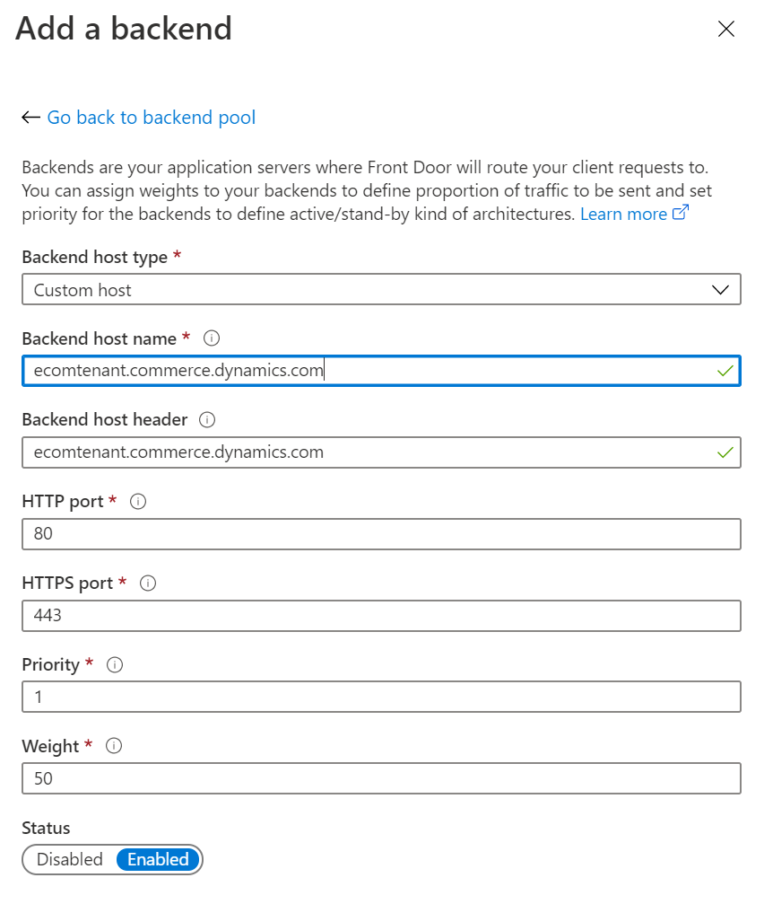
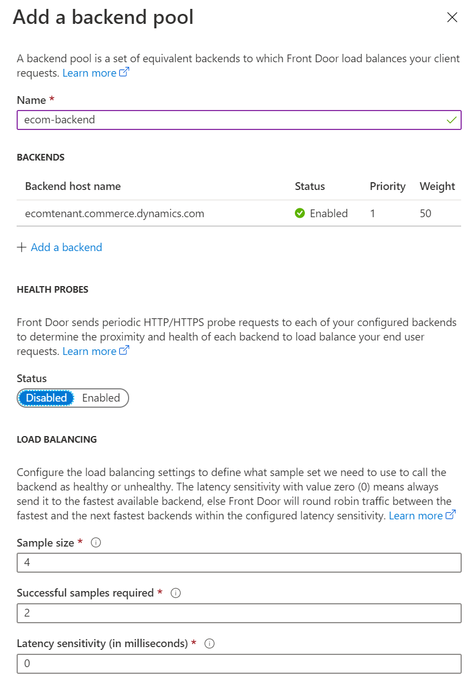
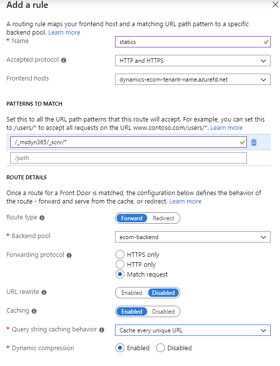
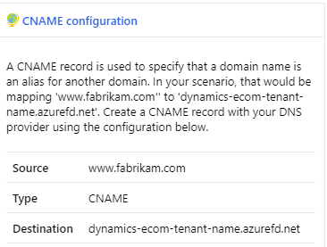
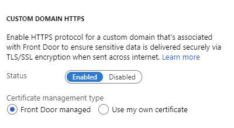

Unterstützung für ein Content Delivery Network (CDN) hinzufügen
Important
Dynamics 365 Retail ist jetzt Dynamics 365 Commerce und bietet umfassende Handelsfunktionen für alle Kanäle – von E-Commerce über Shops bis hin zu Callcentern. Weitere Informationen zu diesen Änderungen finden Sie unter Microsoft Dynamics 365 Commerce.
In diesem Thema wird beschrieben, wie ein Content Delivery Network (CDN) Ihrer Microsoft Dynamics 365 Commerce Umgebung hinzugefügt wird.
Übersicht
Wenn Sie eine E-Commerce-Umgebung in Dynamics 365 Commerce einrichten, können Sie diese so konfigurieren, dass sie mit Ihrem CDN-Dienst arbeitet.
Ihre benutzerdefinierte Domäne kann während des Bereitstellungsprozesses für Ihre E-Commerce-Umgebung aktiviert werden. Alternativ können Sie eine Serviceanforderung verwenden, um diese einzurichten, nachdem der Bereitstellungsprozess abgeschlossen ist. Der Bereitstellungsprozess für die E-Commerce-Umgebung generiert einen Hostnamen, der der Umgebung zugeordnet ist. Dieser Hostname hat das folgende Format, wobei <e-commerce-tenant-name> der Name Ihrer Umgebung ist:
<e-commerce-tenant-name>.commerce.dynamics.com
Der Hostname oder der Endpunkt, die während des Bereitstellungsprozesses generiert wird, unterstützt eine Secure Sockets Layer (SSL)-Bescheinigung nur für *.commerce.dynamics.com. Er unterstützt nicht SSL für benutzerdefinierte Domänen. Daher müssen Sie SSL für benutzerdefinierte Domänen in Ihrem CDN beenden und den Datenverkehr vom CDN zum Hostnamen Endpunkt weiterleiten, der Commerce generiert hat.
Darüber hinaus kommt die Statik (JavaScript oder Cascading Style Sheets [CSS] Dateien) von Commerce vom Endpunkt, die Commerce generiert hat (*.commerce.dynamics.com). Die Statik kann nur zwischengespeichert werden, wenn der Hostname oder der Endpunkt, der generiert wurde, hinter den CDN gestellt wird.
SSL einrichten
Um sicherzustellen, dass SSL eingerichtet ist und dass die Statik zwischengespeichert wird, müssen Sie Ihre CDN konfigurieren, damit sie dem Hostnamen zugeordnet wird, die Commerce für Ihre Umgebung generiert wurde. Sie müssen folgendes Muster nur für Statik zwischenspeichern:
/_msdyn365/_scnr/*
Nachdem Sie Ihre Commerce Umgebung mit der benutzerdefinierten Domäne bereitgestellt haben oder nachdem Sie die benutzerdefinierte Domäne für Ihre Umgebung mithilfe der Serviceanforderung bereitgestellt haben, zeigen Sie Ihre benutzerdefinierten Domäne zum Hostnamen oder Endpunkt, der Commerce generiert hat.
Wie zuvor erwähnt unterstützt der generierte Hostname oder der Endpunkt eine SSL-Zertifikat nur für *.commerce.dynamics.com. Er unterstützt nicht SSL für benutzerdefinierte Domänen.
CDN-Services
Jeder CDN-Service kann mit einer Handelsumgebung verwendet werden. Nachfolgend finden Sie zwei Beispiele:
- Microsoft Azure Front Door Service – Die Azure CDN Lösung. Weitere Informationen über den Azure Front Door Service finden Sie unter Azure Front Door Service Dokumentation.
- Akamai Dynamic Site Accelerator – Weitere Informationen finden Sie unter Dynamic Site Accelerator.
CDN-Einstellungen
Der CDN-Einstellungsprozess besteht aus diesen allgemeinen Schritten:
- Hinzufügen eines Front-End-Hosts.
- Konfigurieren eines Back-End-Pools.
- Richten Sie Regeln zum Weiterleiten und Zwischenspeichern ein.
Hinzufügen eines Front-End-Hosts.
Jeder CDN-Service kann verwendet werden, jedoch wird zum Beispiel in diesem Thema Azure Front Door Service verwendet.
Informationen darüber, wie Azure Front Door Service eingerichtet wird, finden Sie unter Schnellstart: Front Door für eine stark benutzte globale Webanwendung erstellen.
Konfigurieren eines Back-End-Pools in Azure Front Door Service
Um einen Back-End-Pool in Azure Front Door Service zu konfigurieren, folgen Sie diesen Schritten.
- Fügen Sie <ecom-tenant-name>.commerce.dynamics.com dem Back-End-Pool als benutzerdefinierten Host hinzu, der einen leeren Back-End-Host-Titel hat.
- Lassen Sie unter Lastenausgleich die Standardwerte.
Die folgende Abbildung zeigt das Dialogfeld Hinzufügen eines Back-End-Pools in Azure Front Door Service mit dem eingegebenen Back-End-Hostnamen.

Die folgende Abbildung zeigt das Dialogfeld Hinzufügen eines Back-End-Pools in Azure Front Door Service mit den Standardwerten des Lastenausgleichs.

Richten Sie Regeln in Azure Front Door Service ein
Um eine Routingregel im Azure Front Door Service einzurichten, führen Sie die folgenden Schritte aus.
- Eine Routingregel hinzufügen.
- Geben Sie im Feld Name Standard ein.
- Wählen Sie im Feld Angenommenes Protokoll HTTP und HTTPS aus.
- Im Feld Frontend-Hosts geben Sie den Text dynamics-ecom-tenant-name.azurefd.net ein.
- Unter Muster zur Übereinstimmung im oberen Feld geben Sie */* _ ein.
- Unter Arbeitsplandetails legen Sie die Option Arbeitsplantyp auf Vorwärts fest.
- Wählen Sie im Feld Backend-Pool ecom-backend.
- In der Feldgruppe Weiterleitungsprotokoll wählen Sie die Option Abgleichungsanforderung aus.
- Hier können Sie die Option URL neu schreiben auf Deaktiviert festlegen.
- Hier können Sie die Option Zwischenspeichern auf Deaktiviert festlegen.
Um eine Routingregel im Azure Front Door Service zwischenzuspeichern, führen Sie die folgenden Schritte aus.
- Eine Zwischenspeicherregel hinzufügen.
- Geben Sie im Feld Name Statik ein.
- Wählen Sie im Feld Angenommenes Protokoll HTTP und HTTPS aus.
- Im Feld Frontend-Hosts geben Sie den Text dynamics-ecom-tenant-name.azurefd.net ein.
- Unter Muster zur Übereinstimmung im oberen Feld */_msdyn365/_scnr/* _.
- Unter Arbeitsplandetails legen Sie die Option Arbeitsplantyp auf Vorwärts fest.
- Wählen Sie im Feld Backend-Pool ecom-backend.
- In der Feldgruppe Weiterleitungsprotokoll wählen Sie die Option Abgleichungsanforderung aus.
- Hier können Sie die Option URL neu schreiben auf Deaktiviert festlegen.
- Hier können Sie die Option Zwischenspeichern auf Deaktiviert festlegen.
- Wählen Sie im Feld Verhalten für Zwischenspeicherabfagezeichenfolge, Jede einzelne URL zwischenspeichern aus.
- In der Feldgruppe Dynamische Kompression wählen Sie die Option Aktiviert aus.
Die folgende Abbildung zeigt das Dialogfeld Hinzufügen einer Regel in Azure Front Door Service an.

Warning
Wenn die Domain, die Sie verwenden, bereits aktiv ist, erstellen Sie ein Supportticket aus der Kachel Support in Microsoft Dynamics Lifecycle Services, um Unterstützung für Ihre nächsten Schritte zu erhalten. Weitere Informationen finden Sie unter Support für Finance and Operations Apps oder Lifecycle Services (LCS) anfordern.
Wenn Ihre Domäne neu und keine bereits vorhandene aktive Domäne ist, können Sie Ihre benutzerdefinierte Domäne der Konfiguration für den Azure Front Door Service hinzufügen. So kann der Webdatenverkehr über die Azure-Front-Door-Instanz auf Ihre Site weitergeleitet werden. Um die benutzerdefinierte Domäne hinzuzufügen (beispielsweise www.fabrikam.com), müssen Sie einen kanonischen Namen (CNAME) für die Domäne konfigurieren.
Die folgende Abbildung zeigt das Dialogfeld CNAME Konfiguration in Azure Front Door Service an.

Sie können Azure Front Door Service verwenden, um die Zertifikate zu verwalten, oder Sie können eine eigene Bescheinigung für die benutzerdefinierte Domäne verwenden.
Die folgende Abbildung zeigt das Dialogfeld Benutzerdefinierte Domäne HTTPS in Azure Front Door Service an.

Ausführliche Anweisungen zum Hinzufügen einer benutzerdefinierten Domäne zu Ihrer Azure Front Door finden Sie unter Benutzerdefinierte Domäne zu Front Door hinzufügen.
Ihr CDN sollte jetzt ordnungsgemäß konfiguriert werden, so dass sie mit der Commerce Site verwendet werden kann.
Zusätzliche Ressourcen
Neuen E-Commerce-Mandanten bereitstellen
Zuordnen einer Dynamics 365 Commerce-Website zu einem Onlinekanal
URL-Umleitungen in Massen hochladen (This is an external link)
Einrichten eines B2C-Mandanten in Commerce
Einrichten angepasster Seiten für die Benutzeranmeldungen
Konfigurieren Sie mehrere B2C-Mandanten in einer Commerce-Umgebung